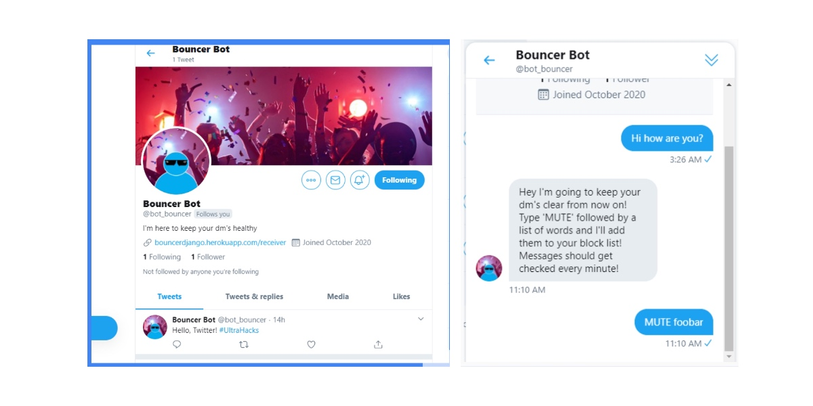

A Twitter bot that encourages healthy conversations by utilizing Twitter’s mute function.
October 2020
Bouncer Bot is a Twitter bot that utilizes Twitter's mute function for users. The mute function can be a powerful and useful tool to curate and censor a user's timeline and content they interact with everyday. We wanted to create a bot that could help facilitate Twitter’s built in muting function in a useful way.
Bouncer Bot mutes certain words the user DMs the bot and censors it so that the user doesn't have to see content that includes that word. We also worked to incorporate images to the bot. The bot analyzes the image a user sends, and calculates the MSE (mean squared error) of the image model, and mutes all images in the future that are close in value to the muted image.
This project was created for the Twitter sponsored #UltraHacks virtual hackathon, which I got the opportunity to attend through Tech@NYU’s program, Tech Undivided. Tech Undivided is a pilot program that connects Black and Latinx students with networking and professional opportunities to help their journey into tech.
The objective of the hackathon was to create a project for Twitter that would encourage healthy conversations, so first we had to get familiar with the Twitter API and the Tweepy Python library. We created Developer accounts and first programmed the bot to send a DM to users, and if that functionality failed, attempted to send a normal tweet. With the API’s mute functionality, we are able to receive a DM from another account, giving us a word they want to mute, and we mute it for them.
We also started to create an extra feature to the bot that would allow the bot to mute images as well. A user would send the image they want to mute, and we would save the image into our database. Then, if that same user was sent that image, or an image similar to it, our bot would calculate the mean squared error between the sent image and the muted image, and if the images are similar, our bot would mute the message of the picture. The bot was built with Python and Django, and deployed using Heroku. You can check out our work here.
At the end of the weekend, we placed 2nd among everyone and were able to present our projects to all the attendees and Twitter representatives at the event. It was my first online hackathon I participated in and it was all around a successful and enjoyable experience.
And the 2nd place winner of the #UltraHacks Hackathon is......🥁 roll please.....#BOUNCERBOT 🤖
— Twitter University Recruiting (@TwitterU) October 18, 2020
Congratulations to the @techatnyu chapter representing @nyuniversity! pic.twitter.com/klkXRk5VbI